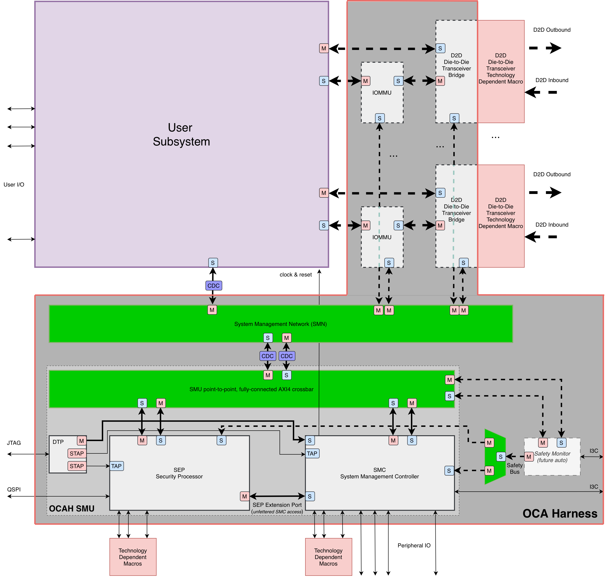

OCAH Architecture & Design
This section provides an overview of the OCAH architecture including its subsystem composition, power and clock domains, reset hierarchy, and memory map. Navigate through the sidebar for detailed information on each subsystem.
1. OCAH Architecture
This chapter describes the OCAH subsystem composition, power and clock domains, reset hierarchy, and memory map. Subsequent chapters provide detailed microarchitectural documentation for each subsystem.
1.1. OCAH High-Level Features
-
Security Enclave Processor (SEP) — Root of Trust (RoT) with the highest security privilege. Provides a physically isolated RISC-V execution environment for secure boot, lifecycle control, device attestation, and hardware-accelerated cryptography (OTBN PKA, AES, HMAC-SHA2, KMAC-SHA3, TRNG, DRBG, Key Manager). A security hierarchy across chiplets enables SiP-wide security management.
-
System Management Controller (SMC) — Firmware-driven orchestration engine responsible for clock, voltage, and reset management, platform bootstrapping, system initialisation, and power/thermal management. Built around a RISC-V micro-controller with hardware accelerators (DMA, memory zeroer) where firmware alone cannot meet timing requirements. Inter-chiplet management hierarchy via I2C/I3C and OCMI channels.
-
Debug & Test Ports (DTP) — Standardised debug and test access across heterogeneous, multi-vendor chiplet systems. Layered architecture separating physical transport from logical access, with cross-chiplet event triggering, synchronised clock control for trace, and coordinated resets.
-
System Management Unit (SMU) — The composite module combining SEP, SMC, and DTP into a single instantiable subsystem.
-
System Management Network (SMN) — Internal communication fabric (point-to-point or packetised) providing the management backbone for configuration, status reporting, and firmware-driven coordination between SMU, user logic, and D2D interfaces.
-
AXI-over-UCIe Bridge (AoU) — Protocol bridge between the AXI-based internal fabric and the UCIe die-to-die physical interface, enabling inter-chiplet system management traffic and application-level transaction forwarding.
-
Application-Specific Logic — OCAH treats the application layer as a black box: the harness services are agnostic to whether the application is a CPU complex, NoC, DSA, memory controller, or high-speed IO. The application logic is outside the scope of OCAH.
-
Safety Monitor (SMO) — External entity that collects error signals and diagnostic logging from OCAH subsystems to implement fault reaction policies. The SMO is outside the scope of OCAH; its interface requirements are specified in the functional safety chapter.
1.2. Top Block Diagram
The figure below presents the OCAH top-level block diagram showing the relationship between the subsystems described above.

1.2.1. SMU AXI Crossbar
Inside the SMU, the smu_axi_xbar module is the system-level
arbitration fabric between SEP, SMC, and the rest of the chiplet
(reached through the smu_axi_in / smu_axi_out boundary pair). It is
a 3x3 AXI4 crossbar with non-reflexive connectivity: each master can
reach the other two subordinates but never its own inbound port.
| Master (from) | Subordinate (to) | Purpose |
|---|---|---|
|
|
SEP-initiated transactions into SMC resources |
|
|
SEP-initiated transactions leaving the SMU |
|
|
SMC-initiated transactions into SEP resources |
|
|
SMC-initiated transactions leaving the SMU |
|
|
External transactions targeting SEP |
|
|
External transactions targeting SMC |
Routing decisions use a runtime address map with two programmable
rules (SEP and SMC apertures) and one static catch-all (ext_out).
See OCAH Memory Map for the fixed-vs-programmable
split and the reference envelope convention, and see the SMU AXI Crossbar
Address Map section in the Integrator Guide for firmware programming order.
1.3. OCAH Memory Map
OCAH separates the chiplet-visible SMU aperture from the internal address maps used by SEP and SMC firmware. The chiplet integrator decides which system address range reaches the SMU external AXI input. Firmware then programs the SEP and SMC global base/size CSRs so the SMU crossbar can route incoming traffic to the correct inbound port.
| Concept | Configured by | Purpose | Example |
|---|---|---|---|
Chiplet NoC envelope |
Integrator / chiplet address map |
Controls which external-master addresses reach SMU |
Example only: 64 MiB total SMU aperture |
SEP global aperture |
SEP firmware via |
Controls SMU |
Example only: 32 MiB SEP slot in a 32 MiB + 32 MiB SEP/SMC partition |
SMC global aperture |
SMC firmware via |
Controls SMU |
Example only: 32 MiB SMC slot in a 32 MiB + 32 MiB SEP/SMC partition |
External masters use chiplet-global addresses and are bounded first by the
chiplet NoC decode. The SMU crossbar applies the firmware-programmed SEP and
SMC global apertures to route those transactions to sep_in or smc_in.
Subsystem-internal CPU maps and local aliases are described in the SEP and SMC
chapters.
The current reset defaults are conservative boot values:
SEP_REGION_SIZE resets to 0x0100_0000 (16 MiB) and SMC REGION_SIZE
resets to 0x0100_0000 (16 MiB). Firmware may reprogram these values during
early boot to match the chiplet address assignment. If the reset values are
changed to a 32 MiB SEP/SMC split, this section should be updated
accordingly.
1.4. Power Domains
The SMU, SMN, and AXI-over-UCIe bridge (AoU) reside in the same always-on power domain. This domain remains powered whenever the chiplet has supply, ensuring that platform management, inter-chiplet communication, and security services are available even when application logic is powered down.
Vendor-specific macros and subsystems that are outside the scope of OCAH — such as OTP/eFuse controllers, PLLs, die-to-die PHYs (e.g. UCIe PHY),
analogue sensors, and application-specific tiles — typically reside in their
own dedicated power and voltage domains defined by the adopter’s power
architecture. OCAH provides the isolation and sequencing infrastructure
(isolate_req_o[31:0], ss_reset_ctrl_o[31:0]) that the SMC firmware uses
to coordinate power transitions for these external domains, but their supply
rail definitions, power gating decisions, and leakage budgets are
adopter-specific.
The SMC provides runtime power management services for the application logic,
including dynamic voltage and frequency scaling (DVFS) through AVSBus-based
voltage regulator control and firmware-driven Performance State (P-State)
management. At the RTL level, the SMU accepts a powergood_i input that
indicates supply stability and exposes isolate_req_o[31:0] to request
isolation of individual subsystem domains before power transitions.
| The figure below will be provided as an annotated version of the top-level block diagram highlighting the power domains. |
1.5. Clock Domains
OCAH distinguishes low-level management timing from functional application
clocks. The SMC receives an always-on reference clock (clk_ref_i) that is
available from power-on, before any PLL is locked. Using this reference clock,
the SMC controls the PLLs during early bring-up and generates the primary
system clock (clk_smu_i) that is then distributed to the SMC itself, the
SEP, and the DTP.
The SMN lives in its own clock domain with respect to the SMU --- as highlighted by the clock domain crossing in the top level diagram --- and with respect to the application logic.
The following table summarises the clock domains present in OCAH.
| Clock | Subsystem | Description |
|---|---|---|
|
SMU (SMC, SEP, DTP) |
Primary system clock, generated by the PLL under SMC control. Distributed internally to the SMC, SEP, and DTP subsystems. Drives the CPU cluster, fabric interconnect, peripheral controllers, and DTP cross-trigger / AXI bridges. |
|
SMN |
System Management Network clock. Independent of |
|
SMC |
Always-on reference clock, available before PLL lock. Used by the SMC for early bring-up, PLL control, reset synchronisation, and peripherals requiring a stable, lower-frequency source. |
|
SMC |
Peripheral clock domain. Drives SMC peripheral subsystems. The reset unit
generates a dedicated synchronised reset ( |
|
SMC |
ATB telemetry clock domain. Separate clock for Advanced Trace Bus data
collection, with its own reset ( |
|
SEP |
Low-frequency watchdog timer clock. Must be independent of the system clock so the WDT can detect system clock failures. |
|
DTP / SEP |
JTAG Test Clock. Drives PTAP, STAP state machines, and all JTAG-domain scan logic inside the DTP/SMC/SEP. |
|
SEP |
Ring-oscillator sample clock for the entropy source (TRNG). Must be
asynchronous to |
| The figure below will be provided as an annotated version of the top-level block diagram highlighting the clock domains. |
1.6. Reset
Reset is handled hierarchically so that the management infrastructure comes
out of reset first and then releases dependent domains in a controlled order.
A global power-on reset (rst_cold_ni) establishes a known state for the
entire chiplet, but the always-on domain is intended to be released first so
that early control logic is live immediately. From there, the SMC sequences
reset deassertion for the SMN and for downstream managed blocks according to
platform dependencies, boot policy, and fault conditions. This staged reset
model also supports partial and warm-reset behaviours in which application
domains can be reset or recovered without fully tearing down the always-on
management infrastructure.
The reset hierarchy within the SMU proceeds as follows:
-
Power-on / cold reset. The external
rst_cold_niis asserted during power-up and deasserted synchronously after supply voltages stabilise. Thepowergood_iinput indicates that supplies are stable. -
SMC reset synchronisation. The SMC reset unit (
smc_reset_unit) generates domain-specific synchronised resets from the single cold reset input:-
rst_primary_smc_clk_no— synchronised to the primary SMC clock domain -
rst_primary_ref_clk_no— synchronised to the reference clock domain -
rst_primary_periph_clk_no— synchronised to the peripheral clock domain -
rst_cold_stable_ref_clk_no— stable cold reset in the reference domain
-
-
DTP reset. The DTP is held in reset by the SMC’s primary synchronised reset (
rst_primary_smc_clk_no). In addition, the JTAG state machine requires a power-on reset that remains asserted until supplies are stable; at the SMU level this is thepowergood_stablesignal generated by the SMC. -
SEP reset. The SEP is held in reset by the same SMC primary reset (
rst_primary_smc_clk_no). A separate watchdog reset path (rst_wdt_nat the SMU level, generated by the SMC reset unit) allows the SEP to be independently reset by its watchdog timer. -
Downstream subsystem sequencing. The SMC sequences reset deassertion for up to 32 managed subsystems through
ss_reset_ctrl_o[31:0]and isolation throughisolate_req_o[31:0]. Subsystems report completion viass_reset_complete_i[31:0]. -
Function Level Reset (FLR). Asserting
cfg_flr_pf_active_itriggers a warm reset sequence that isolates subsystems throughisolate_req_oand performs controlled reset propagation without tearing down the always-on infrastructure. -
Debug reset overrides. The DTP provides JTAG IC_RESET controls that can override cold, cool, and core reset domains independently for debug scenarios. These are wired through the SMU to the SMC’s
rst_{cold,cool,core}_override_ni/rst_{cold,cool,core}_override_en_iports.
For the detailed reset controller design, sequencing FSM, reset register interface, and clock-reset interaction, refer to the [clock-and-reset-management] chapter. For integration-level reset procedures, refer to the Integrator Guide.
2. Security Processor (SEP)
The Security Processor (SEP) is the Root of Trust (RoT) of the chiplet with the highest security privilege. SEP provides a physically isolated execution environment for highly sensitive security services including secure boot, secure lifecycle control, device attestation, and cryptography services.
3. System Management Controller (SMC)
The System Management Controller (SMC) is a subsystem in a chiplet that handles system management tasks including clock/voltage/reset management, hardware platform bootstrapping, system initialization, and power and thermal management.
4. Debug & Test Ports (DTP)
The DTP subsystem enables debug and test access to a chiplet, facilitates forwarding of JTAG and scan signals, and serves as a routing matrix for cross trigger pulses.
5. System Management Network
The SMN components are described in this document.
|
This section is currently under development. More content will be added as the project matures. |
6. AXI-Over-UCIe Bridge
The AoU components are described in this document.
|
This section is currently under development. More content will be added as the project matures. |